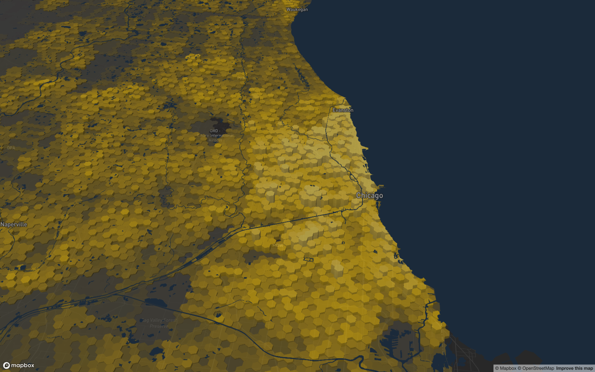
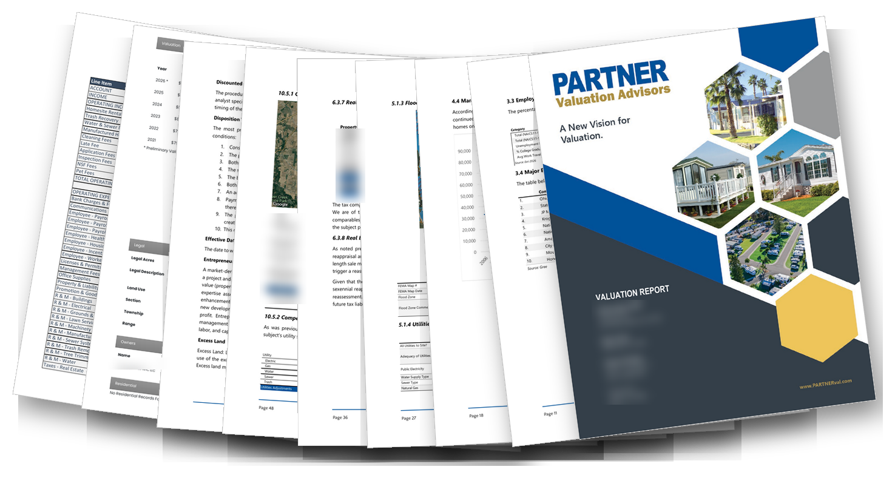
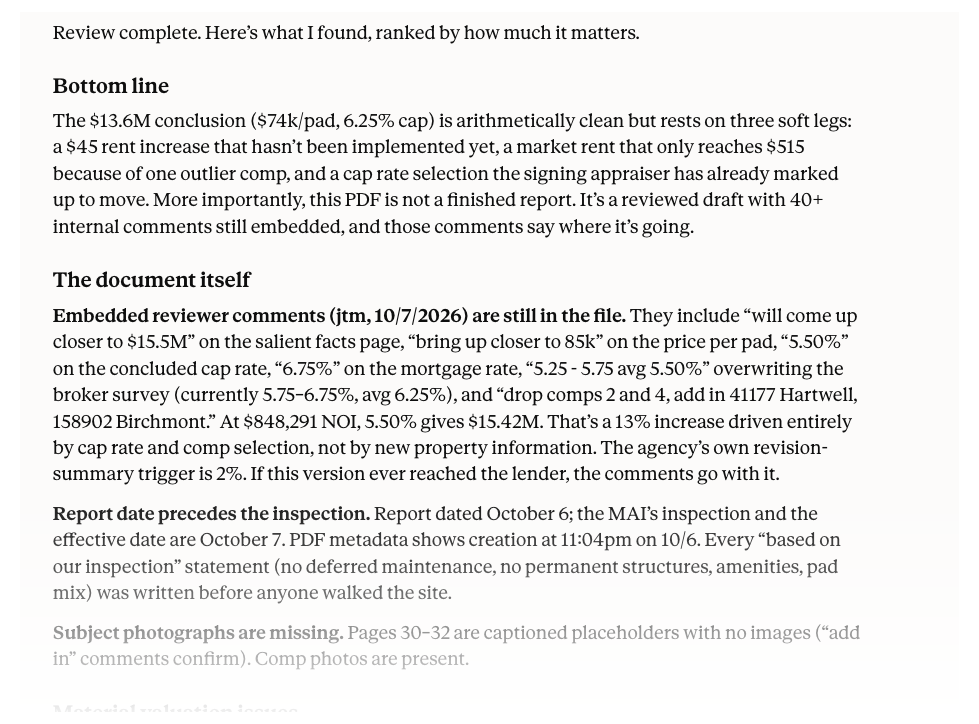
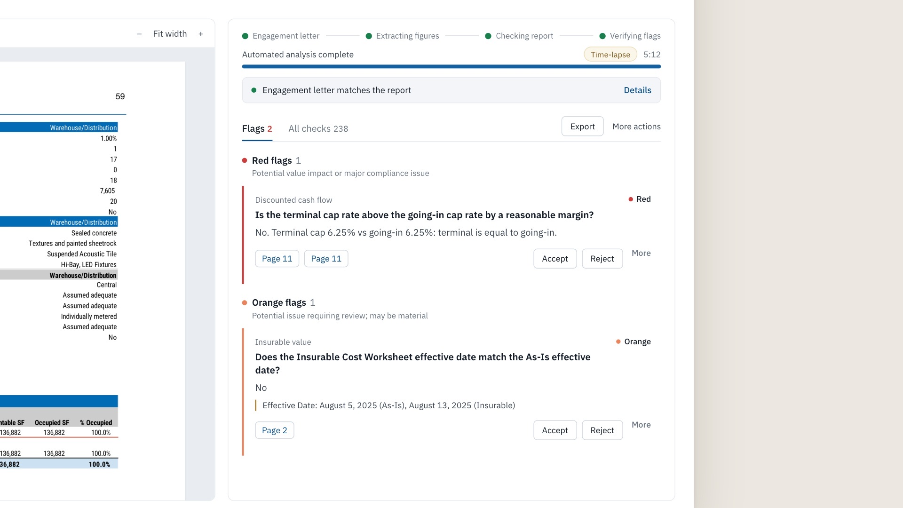
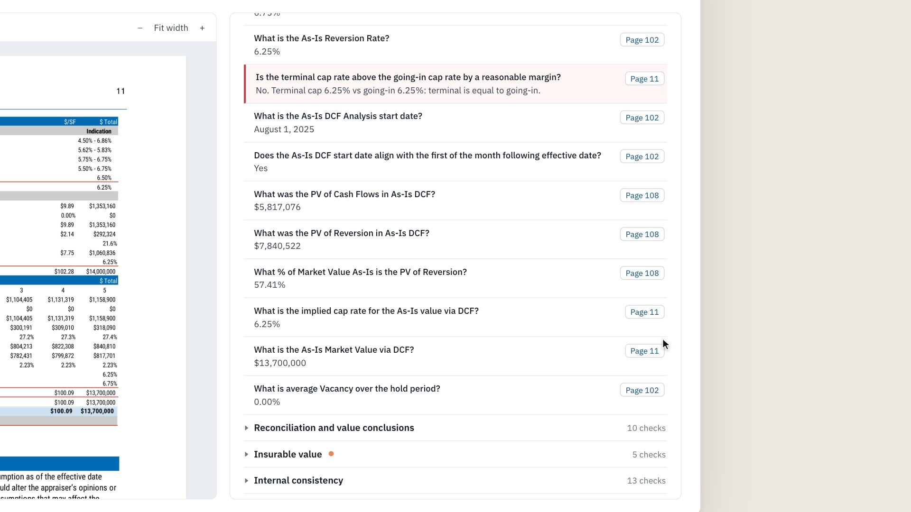
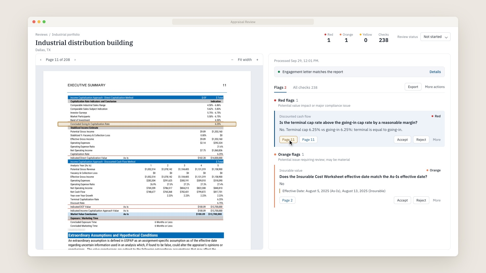
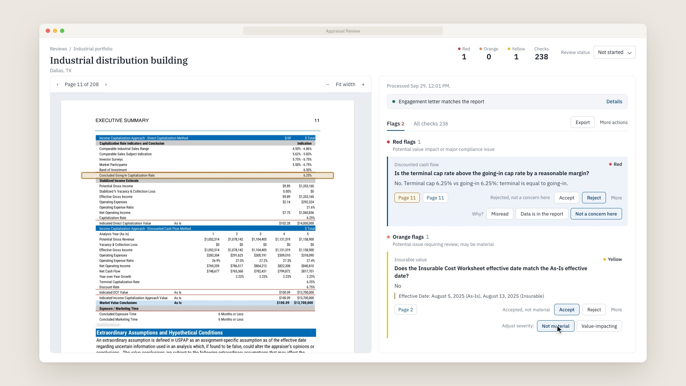
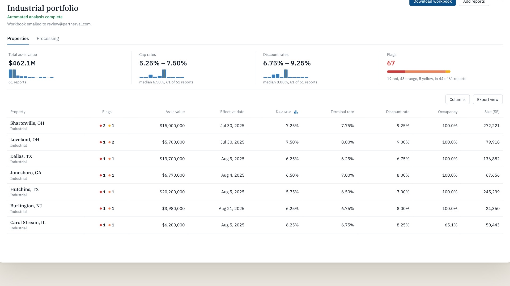
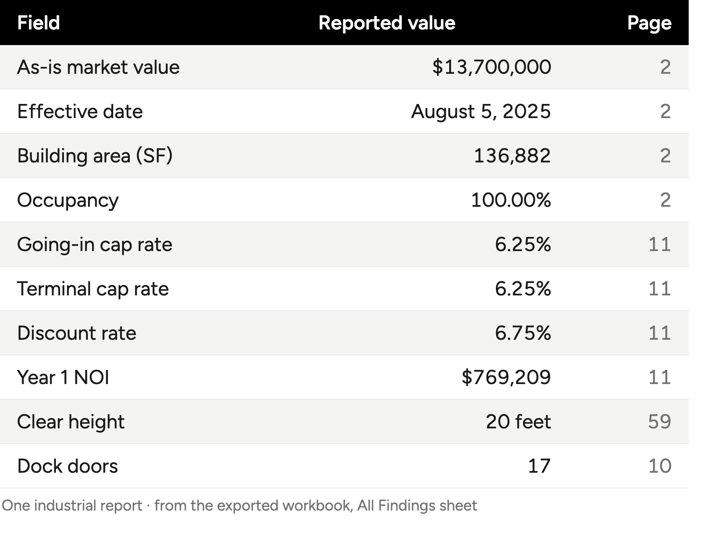

Building production AI workflows and automations teams actually use
The Linnaean Company
October 13, 2026
The Linnaean Company: boutique consultancy providing solutions to clients in commercial real estate since 2016
Direct expertise in geospatial data science, applied AI, and predictive modeling for investment, property management, and appraisal use-cases
Our goal: build custom solutions with modern technologies that drive real organizational impact for clients

We all know AI can make us “more productive” but the real challenge is designing systems that fit existing workflows without creating more work for people
Our process building AI systems: deep domain expertise, years of software development expertise, and a dedicated feedback loop to deploy AI in ways that match how clients work
Today’s example: our collaboration with Partner Valuation Advisors on AI for appraisal review
A custom platform for the quality control of commercial appraisals, built with Partner Valuation Advisors and running on their portfolios today
A reviewer is tasked with a portfolio of appraisals - 150+ pages per document, in portfolios of 200
A reviewer will work a long checklist section-by-section, document-by-document
Documents (or portfolios) handled separately; rich data from appraisals not captured

It’s trivial to upload an appraisal to an AI tool or direct an agent to review it. But:
Appraisers now have another block of text to go through, when they’d rather have an output that matches what they already work with (like a spreadsheet)
The results live in one person’s chat window - the reviewer next door can’t see them, and neither can the research team
Every document is a one-off: a 50-report portfolio means 50 uploads, 50 blocks of text, and nothing to roll up

We’ll follow one report from upload to reviewer decision, then zoom out to the full portfolio


6.25% going-in cap rate
6.25% terminal cap rate
0 bp spread, flagged red
The flag is a specific question with the reported values, not a verdict; the reviewer decides whether the appraiser’s rationale holds up
The comparison is a deterministic rule written with Partner’s reviewers; the model extracts the values, the rule does the math




Every extracted field carries its page reference, so any cell can be audited back to the report
The exported workbook includes the portfolio summary, extracted data, and every finding with its evidence
Our question for the room: what would you capture from an appraisal if there were no human cost to doing it?
The same AI we all use, but applied in a way that fits how a review team actually works
Partner’s reviewers are using this on live portfolios today; the checks are theirs, and their decisions tune the system
What it took: domain expertise (Partner’s review standards), software engineering (parallel cloud processing, citations, exports), and a feedback loop with the people who use it
Client documents stay within a secure, access-controlled environment: processed under enterprise API terms that prohibit training on client data, in a dedicated cloud project
Find us at the Linnaean table in the Tech Symposium, Tuesday and Wednesday
Grab our one-pager: what we do, and the Partner work in detail
kyle.walker@linnaean.co · linnaean.co
The Linnaean Company · NCREIF Fall Conference 2026 · Research & Valuation Tech Showcase